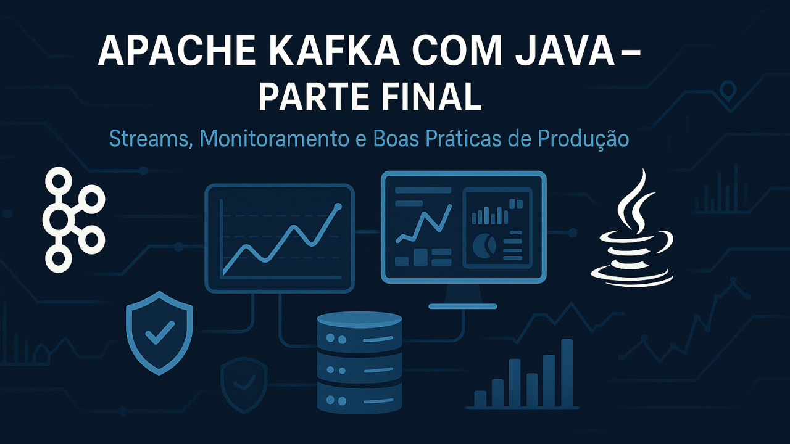

Parte Final - Kafka Avançado E Produção

Kafka Avançado e Produção
Visão Geral
Esta parte é dedicada a tópicos avançados, integração com o ecossistema Kafka, monitoramento, segurança e práticas recomendadas para ambientes de produção.
Artefatos Práticos
Os principais artefatos para colocar em prática os tópicos avançados desta parte estão organizados na pasta artefatos-final/ do repositório:
-
docker-compose-multibroker.yml: Exemplo de configuração de cluster Kafka com múltiplos brokers
-
monitoramento/: Scripts e exemplos para Prometheus e Grafana
-
seguranca/: Arquivos de configuração de autenticação/autorização (SASL/SSL, ACLs)
-
schema-registry/: Exemplo de schema Avro
-
kafka-connect/: Exemplo de configuração de conector JDBC
-
backup-e-automacao/: Script de backup de tópicos
-
boas-praticas/: Checklist de produção
Consulte cada subpasta para exemplos práticos e adapte conforme o seu ambiente.
Processamento Avançado
Kafka Streams
-
Processamento de dados em tempo real diretamente no Kafka
-
Exemplo de uso para agregações, joins e transformações
Kafka Connect
-
Integração com bancos de dados, sistemas legados e APIs
-
Uso de conectores prontos (JDBC, Elasticsearch, etc.)
Schema Registry
-
Gerenciamento de esquemas de dados (Avro, Protobuf, JSON Schema)
-
Evolução de schemas e compatibilidade
Monitoramento e Observabilidade
-
Monitoramento de brokers, tópicos e consumidores
-
Uso de JMX, Prometheus e Grafana para métricas
-
Monitoramento de lag de consumidores
-
Alertas e dashboards
Segurança
-
Autenticação (SASL, SSL/TLS)
-
Autorização (ACLs)
-
Boas práticas para ambientes corporativos
Deploy e Operação
-
Deploy em cluster (alta disponibilidade e replicação)
-
Kafka em nuvem (Confluent Cloud, AWS MSK, Azure Event Hubs)
-
Backup, restauração e upgrades
-
Gerenciamento de recursos e tuning de performance
Boas Práticas para Produção
-
Configuração de retenção de dados
-
Estratégias de particionamento
-
Políticas de replicação
-
Testes de resiliência e failover
-
Documentação e automação de operações
Exercícios Sugeridos
Para fixar o aprendizado e experimentar cenários reais de produção, pratique os seguintes desafios:
-
Configurar um cluster Kafka com múltiplos brokers Monte um ambiente distribuído usando o docker-compose-multibroker.yml e explore como funcionam replicação, failover e balanceamento de partições.
-
Implementar monitoramento com Prometheus e Grafana Utilize os exemplos de configuração para coletar métricas do Kafka e visualize-as em dashboards prontos. Experimente criar alertas para lag de consumidores e uso de disco.
-
Configurar autenticação e autorização Ative SSL/SASL e defina ACLs para controlar o acesso aos tópicos. Teste diferentes cenários de permissão e bloqueio.
-
Realizar testes de failover e recuperação Simule a queda de um broker e observe como o cluster se comporta. Teste a restauração de dados a partir de backups.
-
Integrar Kafka com outros sistemas usando Kafka Connect Configure conectores para importar/exportar dados de bancos relacionais, arquivos ou APIs. Experimente transformar dados em trânsito.
Exercícios Práticos
Para praticar e aprofundar os tópicos avançados, consulte também o arquivo auxiliar:
- parte-final-avancado/exercicios-parte-final.md --- Desafios práticos de produção, automação, monitoramento e segurança, com espaço para anotações e roteiro de estudos.
Parabéns! Você concluiu o guia completo.
Agora você está pronto para atuar com Apache Kafka em ambientes profissionais, dominando desde a arquitetura básica até práticas avançadas de produção, automação, segurança e monitoramento.
Saiba que:
Todo o conteúdo, exemplos práticos e arquivos de configuração desta parte estão disponíveis no repositório oficial do projeto no GitHub:
kafka-java-mastery — suporte@caracore.com.br
Acesse, explore e contribua!